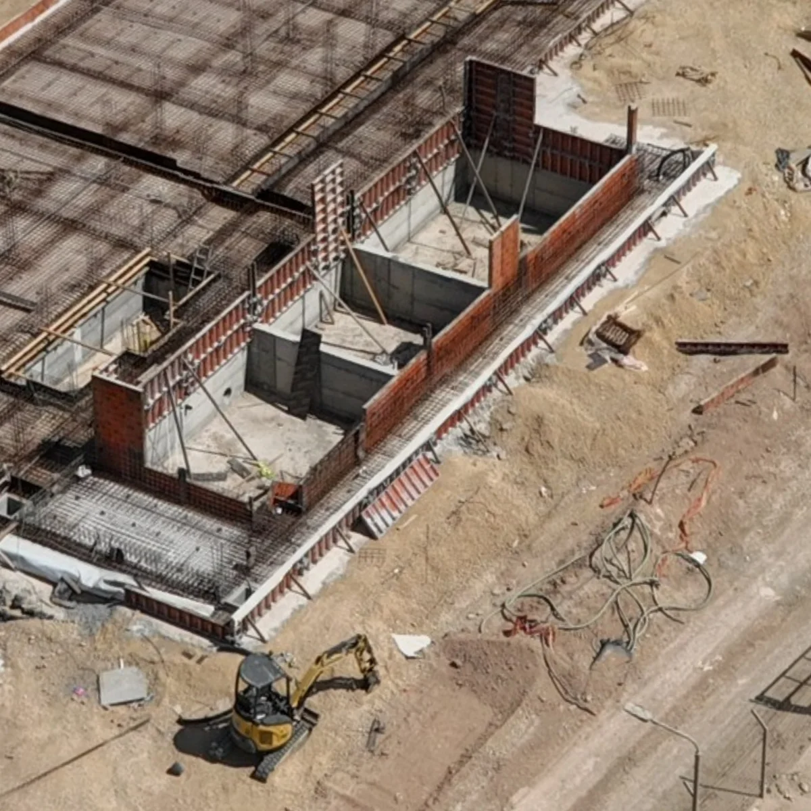
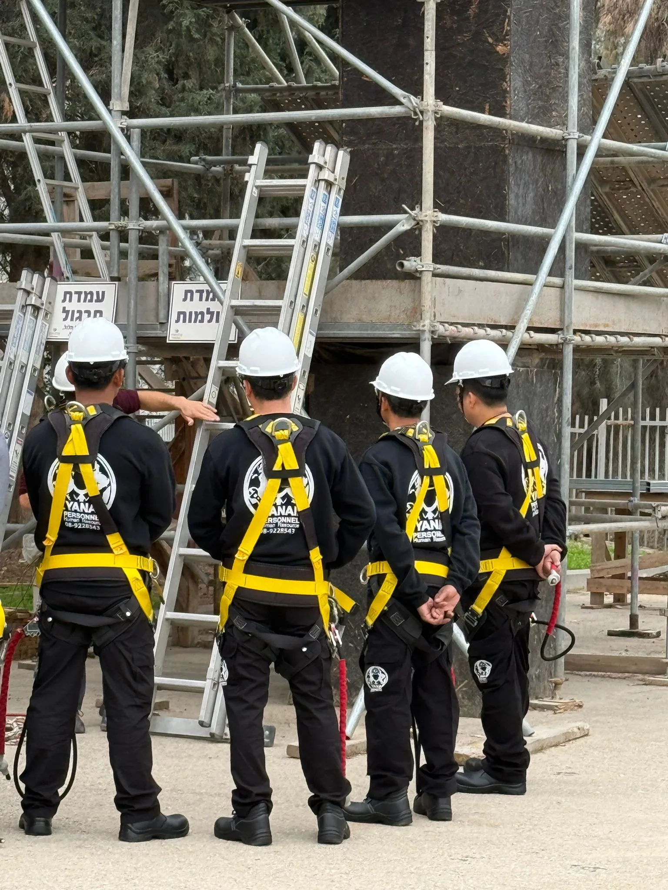

אתם בונים.אנחנו אתכם.
כוח אדם מקצועי לענף הבנייה.טפסנים · ברזלנים · טייחים · רצפיםהתאמת עובדים, טיפול בתהליכי ההעסקה וקשר עם המשרד לאורך העבודה.
איפה הפרויקט
שלכם עכשיו?
בחרו שלב ונכיר לכם את המקצועות המתאימים.
איזה מקצוע
דרוש באתר שלכם?
ארבעה מקצועות, משלד ועד גמר.
בחרו מקצוע וגלו איך נוכל לעזור.

מתוך תמונות השטח שלנוטפסנים לעבודות
השלד שלכם.
צריכים כוח אדם לטפסנות ביסודות, בעמודים או בתקרות? נבחן את שלב הביצוע, היקף העבודה ומספר העובדים הנדרש.
לקראת השיחה: איזה אלמנט יוצקים, כמה עובדים דרושים ומתי רוצים להתחיל?
נדבר על טפסניםמבנה לא קם לבד.
אנשים בונים אותו.
בחרו שלב, נכוון אתכם.
יסודות: טפסנים וברזלנים
נברר אילו עבודות מתוכננות, מה היקף כוח האדם ומתי נדרשת תחילת העבודה.
שלד: מתכננים את ההמשך
לקראת עמודים, קורות ותקרות, ספרו לנו אם צריך לתגבר צוות קיים או להתאים כוח אדם לשלב הבא.
גמר: טייחים ורצפים
נדבר על סוג עבודות הטיח, הריצוף או החיפוי, מצב האתר ומועד הכניסה הרצוי.
כוח אדם לאתר.
כתובת גם להמשך.
משלב ההתאמה ועד העבודה בשטח.
ינאי פרסונל היא תאגיד להעסקת עובדים זרים בענף הבנייה. לצד התאמת כוח האדם, אנחנו מטפלים בתהליכי ההעסקה וממשיכים בקשר עם הקבלן לאורך ההתקשרות.
- מתחילים בצורך שלכם
- המקצוע, היקף העבודה ומועד ההתחלה הם הבסיס לבדיקת ההתאמה.
- מסדירים את ההתקשרות
- מתאמים את הפרטים ואת תהליכי ההעסקה לקראת תחילת העבודה.
- ממשיכים בקשר
- המשרד נשאר כתובת לפניות בנושאי כוח האדם גם אחרי השיבוץ.

הצוותים שלנו,
בפעולה.
מעבודות השלד ועד עבודות הפנים.
הכירו את האנשים שמאחורי העבודה.
אנשי ינאי בעבודות פנים
עבודות איטום גג
צילום מתוך תמונות השטח שלנו.
מהפנייה שלכם.
לתיאום העבודה.
מה מבררים בכל שלב,
ואיך מתקדמים ממנו הלאה.
- 01
מגדירים את הצורך
איפה הפרויקט, איזה מקצוע דרוש, כמה עובדים צריכים ומה מועד ההתחלה הרצוי.
- 02
בודקים התאמה וזמינות
בוחנים את הבקשה מול כוח האדם הזמין ומתאמים ציפיות לגבי האפשרויות ומועד ההתחלה.
- 03
מסכמים את הפרטים
מתאמים את תנאי ההתקשרות ואת תהליכי ההעסקה הנדרשים לפני היציאה לעבודה.
- 04
נשארים בקשר עם המשרד
לאחר תחילת העבודה אפשר לפנות אלינו בנושאי כוח האדם ובשינויים בצורכי הפרויקט.
אפשר לפנות גם אם היקף העבודה עוד לא סגור?
כן. אפשר להתחיל עם שלב הבנייה והמקצועות הנדרשים, ולציין שמספר העובדים או מועד ההתחלה עדיין בבדיקה. בשיחה נברר מה כבר ידוע ומה צריך להשלים לפני התאמה.
מה צריך להכין לפני השיחה הראשונה?
כדאי להכין את מיקום הפרויקט, המקצועות הנדרשים, מספר העובדים המשוער ומועד ההתחלה הרצוי. גם אם חלק מהפרטים עדיין פתוחים, נוכל להבין יחד את הצורך.
תוך כמה זמן אפשר להתחיל לעבוד?
מועד תחילת העבודה תלוי במקצוע, במספר העובדים, בזמינות ובהשלמת ההתקשרות. בשיחה נבדוק את הצורך שלכם ונתאם ציפיות בהתאם למצב בפועל.
האם אתם מלווים גם אחרי תחילת העבודה?
כן. הליווי שלנו ממשיך גם לאחר השיבוץ, עם קשר אישי ומענה בנושאי כוח האדם לאורך ההתקשרות.
איזה כוח אדם
דרוש לכם?
בואו נבדוק יחד.
מקצוע, אזור ומועד התחלה רצוי —
ומכאן נוכל לבדוק התאמה וזמינות לפרויקט.